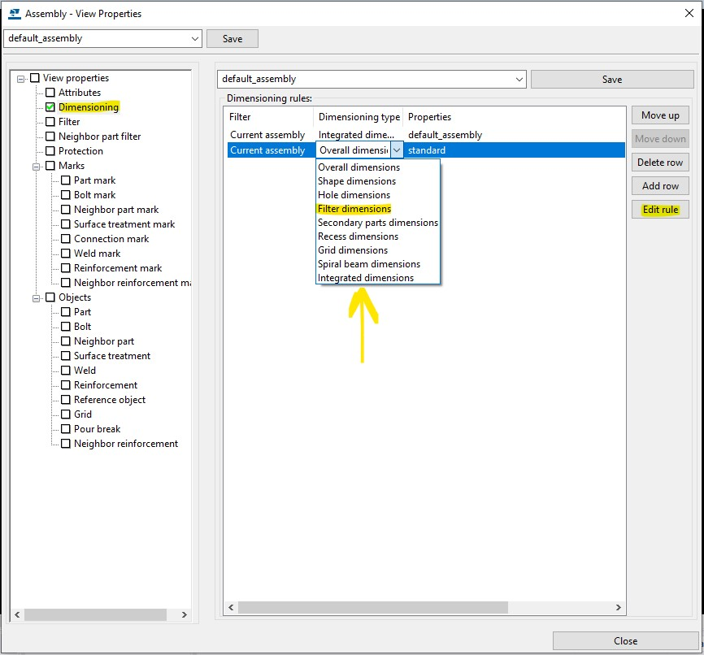

Introduction
Manually dimensioning drawings can be tedious and prone to errors. This post explores the benefits of automatically dimensioning assembly drawings using Tekla's built-in dimensioning rules.
Challenges in Manual Dimensioning
Manually dimensioned drawings struggle to adapt to changes, resulting in time-consuming revisions and updates. This repetitive process can lead to a vicious cycle and reduced motivation among employees tasked with constant corrections. Automation can enhance efficiency and improve consistency.
Defining Dimensioning Rules
Properly setting dimensioning rules can make drawings easily modifiable and adaptable to model changes. You can start from Tekla's default drawing properties for simple assemblies. When needed, configure the Drawing Properties window, save these settings with a descriptive name, and apply them to your drawing creation.
Each view type in the drawing can be assigned its own rule set. Prefer accessing View Properties from the Drawing
Properties window (via the View Creation tab) to avoid unexpected behavior such as scaling issues.

Customizing for Complex Assemblies
For complex cases (e.g., trusses or frames), default properties may fall short. Customize dimensioning through View Properties and consider using the versatile "Filter dimensions" type. By predefining filters, you can target different model element groups, adding layers of dimensions where default settings are inadequate.
Reusability of Dimensioning Rules
Dimensioning rule sets can be saved and reused across models or projects. These attribute files are not model specific, so you can store them centrally and reuse them in similar future projects to ensure uniformity and speed.
Conclusion
Leveraging Tekla's built-in dimensioning functionality simplifies the detailing process with a no-code approach. It significantly lowers the barrier to entry, enabling detailers to focus on more complex aspects while trusting Tekla automation to handle the dimensioning details.
Want to discuss dimensioning workflows? The contact form is open.